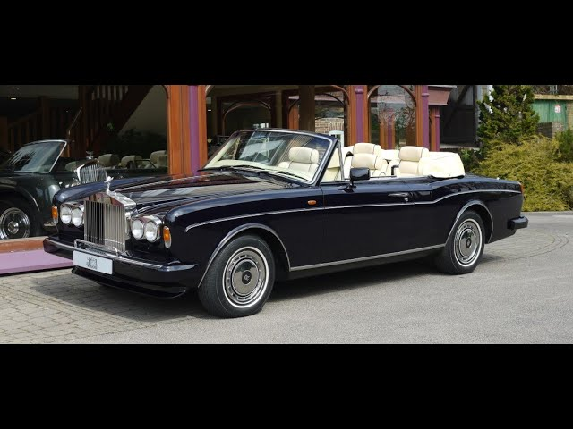

Rolls-Royce Phantom I (1925-1931)

The Corniche, available as coupé or convertible,[6] used the standard Rolls-Royce V8 engine with an aluminium-silicon alloy block and aluminium cylinder heads with cast iron wet cylinder liners. The bore was 4.1 in (104.1 mm) and the stroke was 3.9 in (99.1 mm) for a total of 6.75 L (6,750 cc/411 cuin). Twin SU carburettors were initially fitted, but were replaced with a single Solex 4A1 four-barrel carburetor introduced in 1977.[7] De-smogged export models retained the twin SUs until 1980, when Bosch fuel injection was added.
A three-speed automatic transmission (a Turbo Hydramatic 400 sourced from General Motors) was standard. A four-wheel independent suspension with coil springs was augmented with a hydraulic self-levelling system (using the same system as did Citroën, but without pneumatic springs, and with the hydraulic components built under licence by Rolls-Royce), at first on all four, but later on the rear wheels only. Four wheel disc brakes were specified, with ventilated discs added for 1972.
The car originally used a 119.75 in (3,042 mm) wheelbase. This was extended to 120 in (3,048 mm) in 1974 and 120.5 in (3,061 mm) in 1979. The Corniche was different from other Silver Shadows in that it had exclusive half wheel covers with stainless steel trim (for brake cooling), a 3-spoke steering wheel with a wood rim, and Rolls Royce's first standard tachometer.